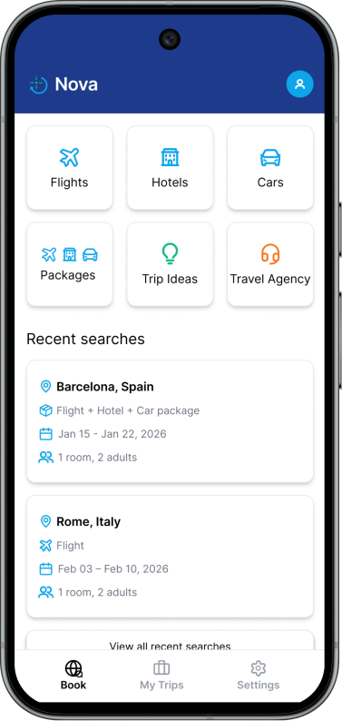
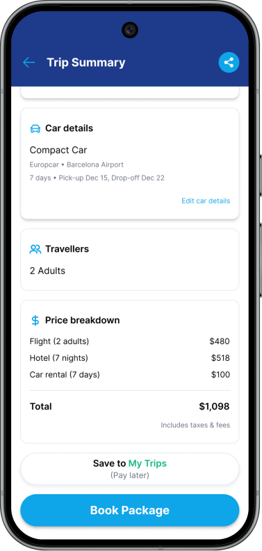
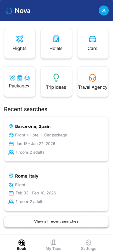
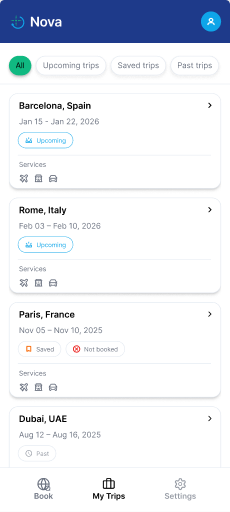
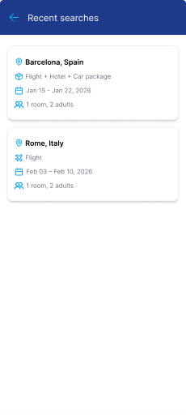
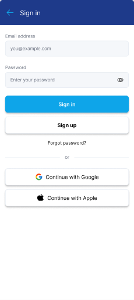

Scattered planning
Research revealed how often people jump between services to plan a single trip.
Nova is a mobile travel concept that brings discovery, booking, and trip management into one thoughtful experience.



Travelers piece together flights, hotels, reviews, itineraries and bookings across different platforms. Every switch adds friction and makes decisions harder.
The opportunity: create one clear place to explore options, understand what you're paying for, and keep plans organized.
Research revealed how often people jump between services to plan a single trip.
Comparing offers becomes difficult when taxes, fees, and included services are hard to find.
Travelers want their upcoming trips, booking details, and important information together.
The original research also highlighted offline access and easier trip sharing. These remained design opportunities, not verified live features of the concept.
I followed a Double Diamond-inspired process, moving from broad discovery to focused decisions, designs, and validation.
Competitive research, interviews, surveys.
Affinity mapping, personas, journeys, IA.
User flows, wireframes, final UI, prototype.
Moderated usability and preference testing.
I reviewed Expedia, KAYAK and Google Travel to understand where travel planning already worked well and where there was room for a calmer, more connected experience.
Many booking types in one ecosystem, but a dense interface can increase decision fatigue.
Effective deal comparison, with a journey that can continue on third-party booking sites.
Helpful integration across travel information, but not a single tailored experience for every traveler.
Opportunity for Nova: bring clear options, transparent trip value, and simple post-booking organization into one mobile-first flow.


Information architecture validation: A tree test with 10 participants recorded 87.5% overall success and 66.25% direct success. “Trip Ideas” was a point of confusion. Because the tree test required a Book-navigation step that would not normally appear on launch, I treated the findings as directional rather than a definitive validation of the final navigation.
Survey findings, interviews, and synthesis pointed toward a consistent set of needs: value, trust, and simplicity.
These findings guided the information architecture and what I chose to prioritize in the interface.
Show what's included and make pricing easier to compare before a traveler commits.
Connect discovery, booking options, and trip details in a cohesive mobile journey.
Travelers have different priorities, from speed and budget to family-friendly, halal-conscious choices.
Selected findings from the original Nova survey. These describe the research participants, not all travelers.
Travelers compare offers across multiple services.
↓ DESIGN RESPONSEA shared Book hub for flight, hotel, car and package discovery.
Included services and final costs are difficult to compare.
↓ DESIGN RESPONSECards emphasize package inclusions, ratings and price context.
Post-booking details are scattered.
↓ DESIGN RESPONSEMy Trips keeps current, saved and past plans accessible.
Three personas were developed from the research to represent different planning behaviors.

Compares options carefully and wants clear, complete prices before booking.

Organizes short trips with friends and wants to move from idea to plan quickly.

Plans around family needs and values trustworthy, culturally suitable options.
Personas and their portraits are taken from the original Nova Figma case study. The personas are research representations, not photographed test participants.
Instead of adding more features to the experience, I focused on making the important actions easier to recognize.
Flights, hotels, cars, packages, trip ideas, and travel agencies are available from Nova's Book screen.
Result cards expose ratings, inclusions, price information, and key conditions for easier comparisons.
A dedicated My Trips destination helps users revisit upcoming, saved, and past plans.
From a clear Book hub to trip management, the screens below come directly from my original Figma designs, not recreated illustrations.
Explore all original screens in Figma ↗A single hub gives people obvious entry points to search flights, hotels, cars, or a complete package.

BOOK / HOME SCREENPackage cards surface what is included, the rating, and a per-person price with a note about taxes and fees. This reflects the research need for clear comparisons.

Upcoming, saved, and past trips have a dedicated home instead of getting lost between services.

Recent searches help users return to destinations and options they were already exploring.
I mapped the main booking path before translating it into wireframes and final screens.
Early wireframes mapped essential actions before visual refinement. The final interface builds on that foundation.
 →
→
Screen images are original Figma exports. Nova is a UX/UI design concept, not a live booking service.
Five moderated usability sessions tested the Figma prototype using realistic booking and trip-management scenarios. Four sessions took place remotely and one was in person.
Task success, completion time, and a 1–7 Single Ease Question (SEQ) rating helped separate task completion from the effort it took.
| TEST SCENARIO | TASK SUCCESS | AVG. TIME | AVG. EASE / 7 |
|---|---|---|---|
| Find a hotel with breakfastBarcelona, family trip | 100% | 2m 26s | 5.4 |
| Choose a travel packageFlight + hotel, halal-food need | 100% | 3m 35s | 5.0 |
| Check a booked trip's priceFind Barcelona in My Trips | 100% | 16s | 6.6 |
Results from the Nova moderated usability testing report, January 27–February 4, 2026. Small exploratory sample (n=5); these findings informed design iteration, not claims of broad product performance.
Participants completed the hotel task, but several spent too long locating the breakfast-included option.
Key amenities were easy to overlook while scanning hotel results.
The breakfast label received a more prominent pill treatment and stronger visual emphasis.


Some participants hesitated at the Packages entry point. I updated the icon to communicate the combined flight, hotel, and car offering more clearly.
Participants located their Barcelona booking and checked the price in an average of 16 seconds, with an average 6.6/7 ease rating.
In a separate first-click test, most participants selected the hotel card to proceed. The recorded average was 47 seconds, with 4.2/5 average confidence. This supported keeping the card's primary action clear.
In the trip-summary preference test, participants chose the more detailed Version A over the shorter Version B. I kept Version A because it made key booking information clearer to this small test group.
Nova started as a solo course assignment and became an end-to-end research, design, and validation exercise. All five test participants could finish the tasks, yet some still struggled to spot essential information. Testing showed where hierarchy and recognition mattered more than adding another feature.
Nova connected user research, competitive analysis, synthesis, information architecture, interaction design, and usability findings. A next iteration would validate the “Trip Ideas” label more thoroughly and explore offline information and trip sharing before claiming those features are solved.